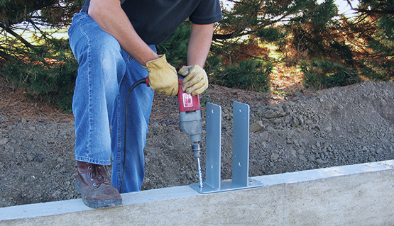

Glulam Members Handle Long Spans
Engineered timber framing can give agricultural structures a calm visual rhythm while accommodating demanding structural layouts. In suitable applications, glue nail laminated columns for barn buildings can provide predictable geometry for roof reactions and wall attachments, while glue nail laminated columns for barn buildings may help establish a consistent line of support around work areas and access points. Their manufactured consistency supports accurate fit-up around doors, service openings, and equipment clearances. The result is a frame that is easier to coordinate with the building envelope and interior use.
Design quality depends on how forces move through the entire assembly rather than on an isolated member. Calculations should address compression, bending, buckling, connection slip, uplift, and the effects of repeated loading. When glue nail laminated columns for barn buildings are considered within the full load path, engineers can set practical connection zones and avoid conflicts with cladding, doors, or service equipment. Careful detailing at joints also limits water entry and makes inspections more straightforward, especially where glue nail laminated columns for barn buildings are exposed to weather or repeated handling.
Installation planning has an equal effect on the finished result. Members should arrive protected, be lifted with approved methods, and be kept clear of standing water until enclosure work is complete; field modifications should follow the engineer's direction rather than improvised cutting or drilling. In a maintenance program, glue nail laminated columns for barn buildings can be reviewed for coating condition, joint movement, fastener integrity, and signs of impact. With these practices in place, engineered wood framing can deliver dependable service while preserving a clean, purposeful appearance.

Nailed Timber Layers Resist Buckling
Built-up timber members are useful where a project must balance structural demand with practical handling. For glue nail laminated columns for barn buildings, engineers should consider unsupported length, end fixity, eccentric loading, and the stiffness of adjoining members before setting a section size. A calculation for glue nail laminated columns for barn buildings can then address how individual laminations share force through fasteners and how local stresses develop around holes, notches, or bearing zones. This approach reduces the chance that a connection detail will govern an otherwise adequate member and gives the construction team clearer limits for field changes.
Installation details can be just as important as calculated capacity. When crews install glue nail laminated columns for barn buildings, they should keep the assembly supported as specified, avoid unapproved drilling, and verify that bolts, plates, and fasteners seat fully against sound timber. For glue nail laminated columns for barn buildings, the designer should also review how bases, caps, and intersecting members introduce concentrated forces. Thoughtful sequencing prevents temporary conditions from creating damage that remains hidden after finishes are applied.
After completion, a simple condition program can help identify issues before they affect service. Inspections should look for open joints, crushed fibers, loose hardware, impact marks, and changes in alignment, while any remedial work should follow an engineer's direction. glue nail laminated columns for barn buildings can perform consistently when surrounding bracing and connection hardware remain in the condition assumed by the design. Clear responsibility for inspections, documentation of repairs, and prompt attention to abnormal movement support a longer service life.
Glued Layers Create Stable Columns
The reliability of a timber support begins at the interfaces between its component pieces. When glue nail laminated columns for barn buildings are manufactured under controlled pressure, adhesive and mechanical fasteners can work together to hold the laminations in position while the assembly cures. Accurate timber preparation, consistent fastener placement, and appropriate curing time help the finished member accept connected work without unnecessary site alterations. In practice, glue nail laminated columns for barn buildings should be assessed with the adhesive system and fastener arrangement treated as one engineered assembly.
Installation should begin with a check of the base, lifting plan, and connection hardware. Before glue nail laminated columns for barn buildings are raised, crews can confirm that bearing surfaces are clean and level, then protect the members from impact during movement. Any drilling, notching, or cutting should follow the approved connection design, because an improvised opening may change how forces travel through the assembly. Once set, glue nail laminated columns for barn buildings should be checked for plumb, full bearing, and secure hardware before nearby work limits access.
Long-term upkeep is easier when inspection is part of ordinary facility care. Periodic reviews can identify loose fasteners, surface damage, corrosion at metal components, or impact from vehicles and stored equipment while corrections remain manageable. If a future alteration is planned, glue nail laminated columns for barn buildings should be reviewed by a qualified professional before new openings, suspended items, or attached machinery are added. This approach helps protect the original work and supports safer decisions as the facility changes.
SCI Laminated Column Product
SCI Laminated Column Product
W3682 Willow Road Curtiss, WI 54422
715.229.2240